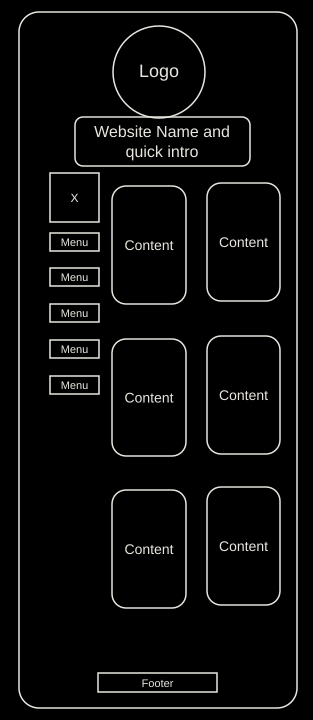
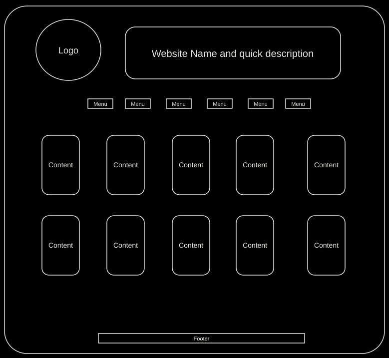

Site Name
Name: Free Flicks
Why this name: This is a website that aggregates public domain movies and other visual media productions, since they are public domain (no copyright), they're legally to watch free online.
Domain: freeflicks.com (this would be the domain if I were to purchase and publish the site online, for the time being we'll keep it on github).
Site Purpose
The purpose of the Free Flicks website is to provide a centralized location for users to discover and watch public domain movies and other visual media productions. By aggregating these resources, the site aims to make it easy for users to find and enjoy content that is freely available for viewing.
Scenarios
Scenario 1: A user is looking for a classic black-and-white movie to watch with friends. They visit Free Flicks and browse the collection of public domain films, finding a selection of options to choose from.
Scenario 2: A student is researching early cinema for a film studies class. They use Free Flicks to access a variety of public domain films, allowing them to analyze and study the content without any legal restrictions.
Color Schema
The color palette for Free Flicks is inspired by the aesthetic of classic movie theaters, reflecting the vintage and timeless nature of public domain films.
- Deep Charcoal: #1A1A1A - Main background color
- Antique Gold: #D4AF37 - Headings and highlights
- Cream: #F5F1E8 - Secondary backgrounds and accents
- Burgundy: #7A1E1E - Buttons and decorative elements
- Off-White: #F8F8F8 - Primary text color
Typography
Font: Libre Baskerville — Used for headings and body text throughout the site, providing a legible serif style that complements the classic theme.
Heading Example
Body text example — This is what paragraphs will look like on the site.
Wireframe
Home page layout for small and large viewports.

